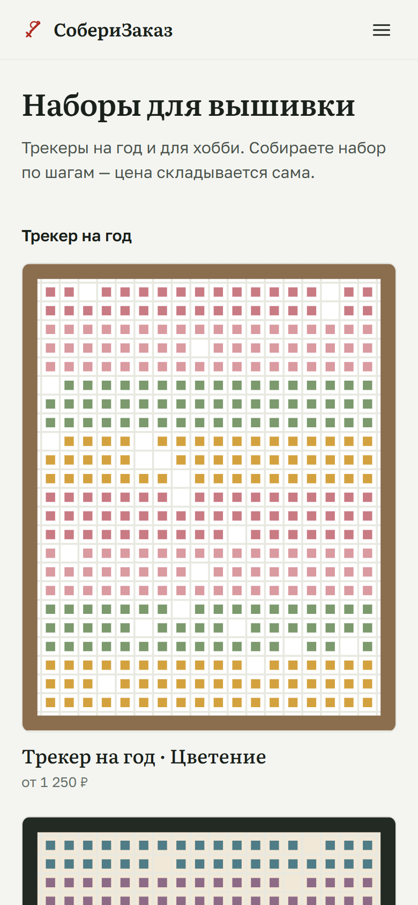

Вариант A · выбран
Красная нить
Бумага схемы, графит и одна красная нить: выбранное и пройденное отмечается ею. Заголовки — Literata, интерфейс — Golos.
- Фон — тёплая бумага #F4F5F1
- Форма — 8 px, 1 px линии, без теней
- Характер — печатная схема, спокойная точность